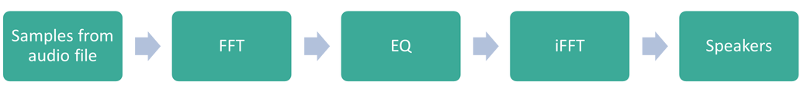

Components for streaming samples from audio file and forwarding manipulated audio signal to speakers
Real-time signal processing components
- Windowed Fast Fourier transform and inverse (FFT/iFFT)
- Three-band equalizer (EQ) based on FFT magnitude spectrogram
- Control components like sliders and buttons taken from Cubbles framework
- Audio player created by connecting components using Extensible Markup Language (XML) without additional programming
Signal chain:

Compound: